Motions & scenes


Recorded execution
Original input videos and recorded policies share the source timeline and a stable source-anchored camera. BeyondMimic and SONIC show median-error recordings from their valid complete runs; BeyondMimic retains its best verified checkpoint. MimicX shows its previously selected best recording. Blue references denote Fixed Reference, purple BeyondMimic, green SONIC and coral MimicX; solid robots are the actual policies. SONIC recordings have no startup support during playback. MimicX includes additional policy continuation; these selected demonstrations are not an equal-budget statistical comparison.
Football Juggling
Dance Sequence
Kung Fu
Execution in collision scenes
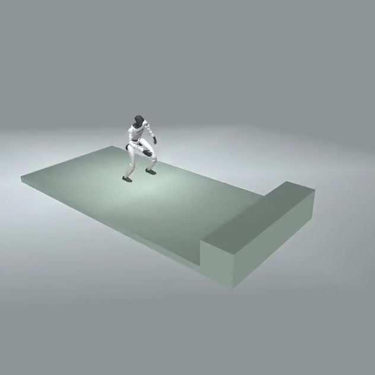
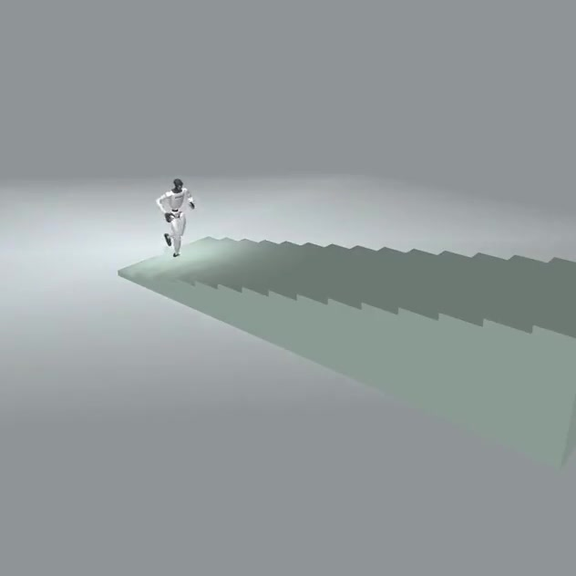
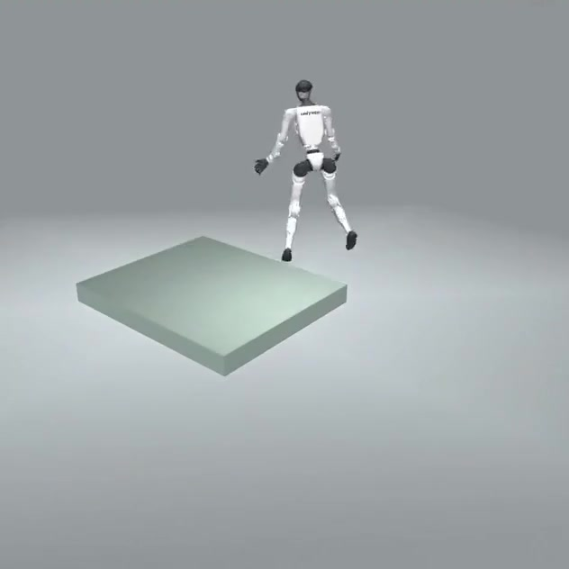
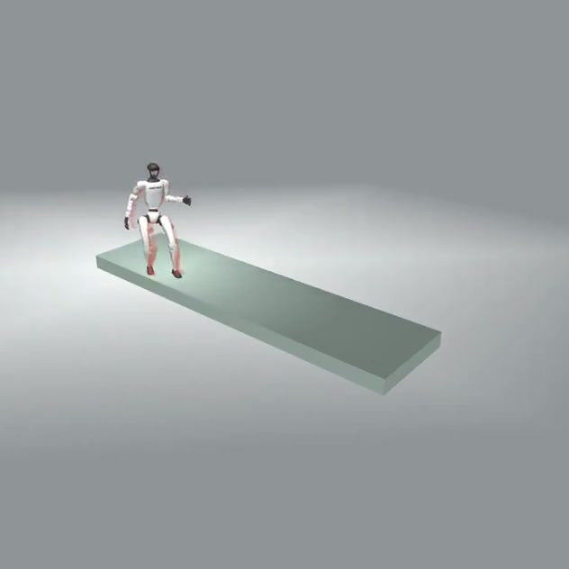
From human video to robot execution
MimicX turns a human demonstration into a humanoid skill, then uses the robot's execution to refine its supervision. Motion reconstruction and retargeting establish a reference; rollout feedback guides what the policy learns next.
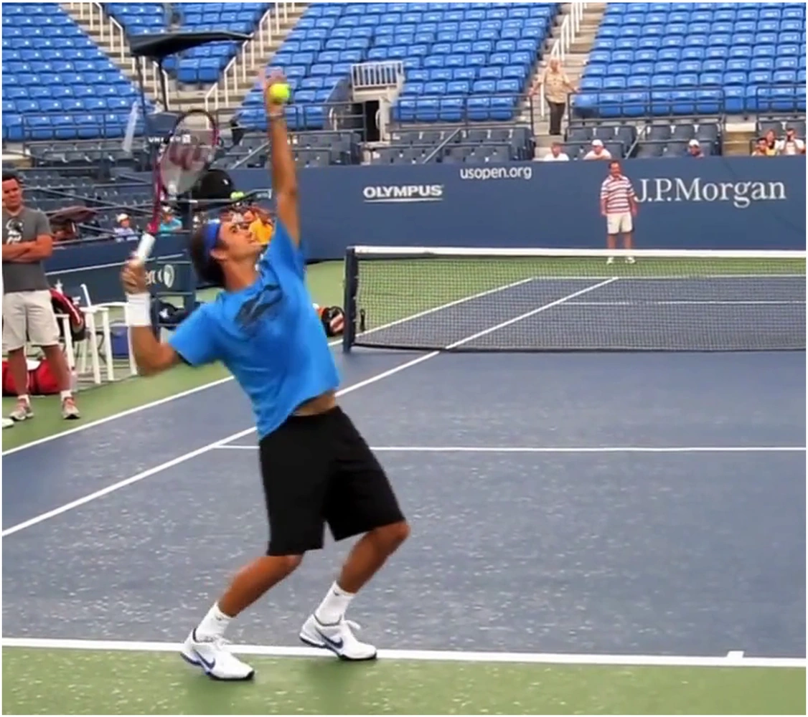
Input videoHuman demonstration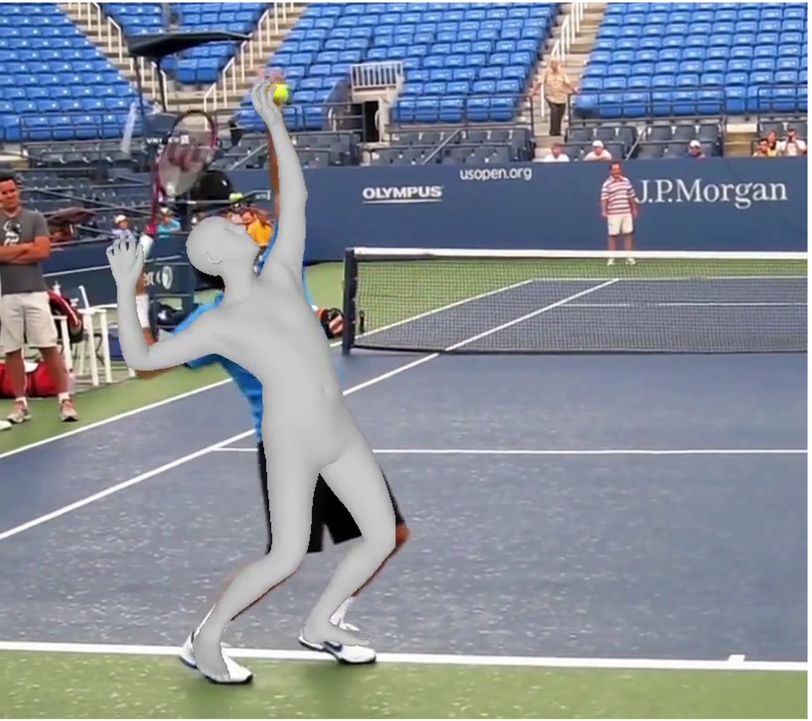
Human reconstructionGVHMR / SMPL-X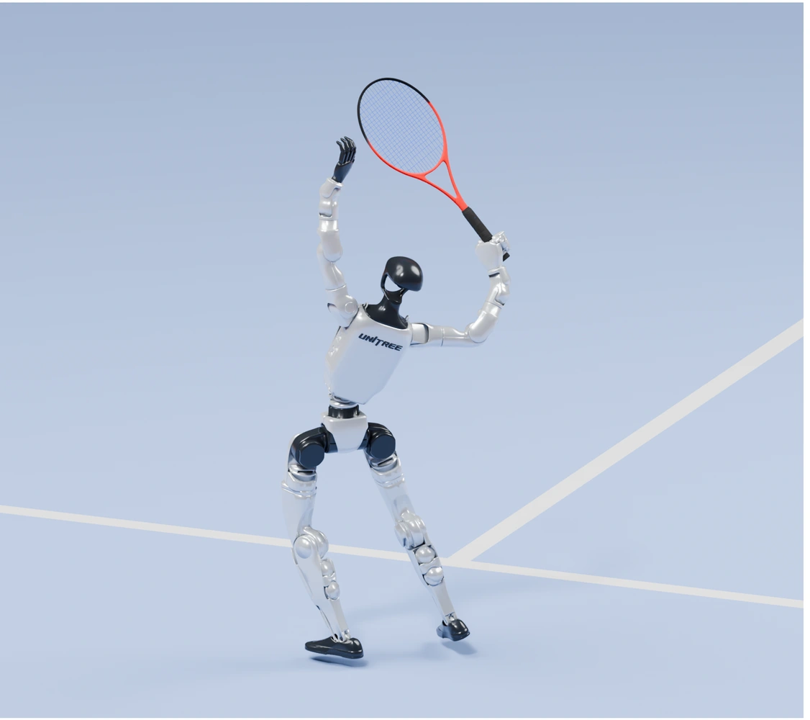
Policy in simulationG1 motion tracking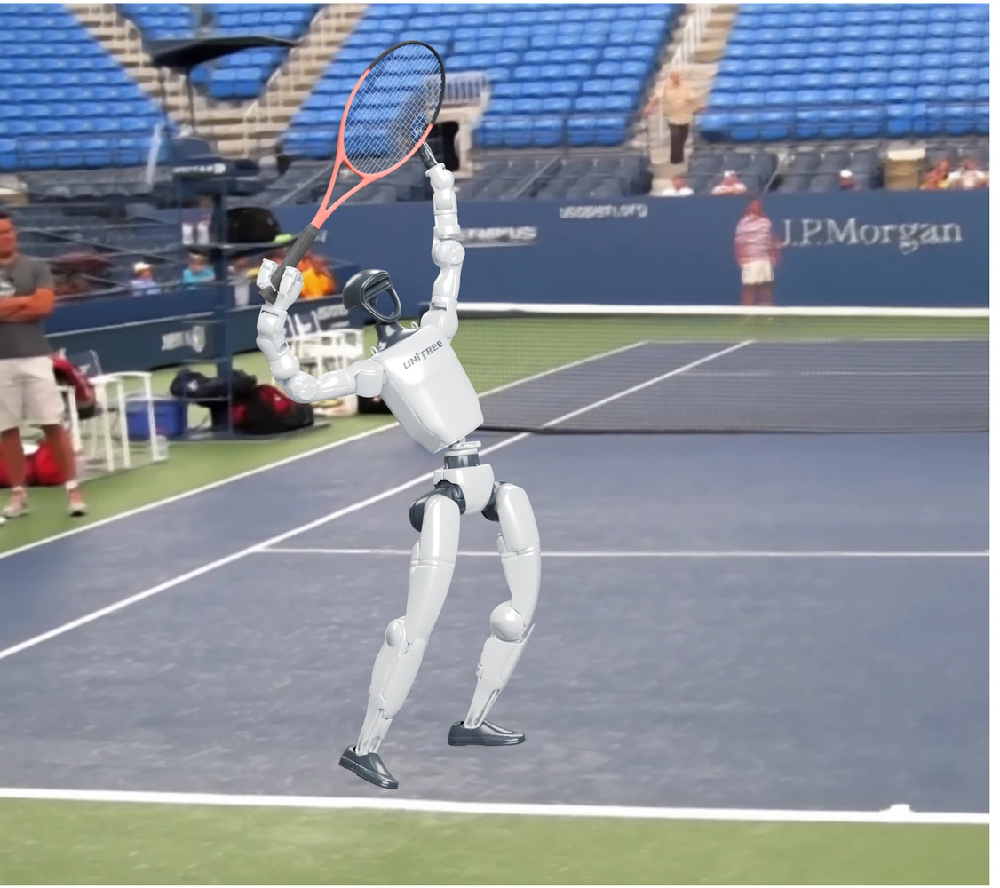
Reconstructed sceneRegistered policy motion


Tennis Swing: the four corresponding stages selected for the paper.
Execution becomes supervision
A registered motion reference establishes the task. Policy feedback determines how that task is practiced and rewarded.

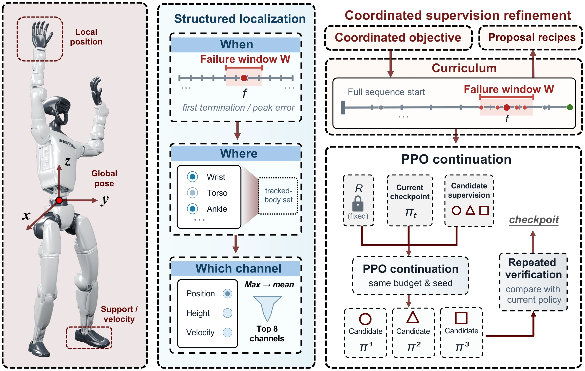
One refinement pass
Read the rollout
Localize where execution departs from the demonstration.
- When
- Failure windows
- Where
- Root, limbs and contacts
- What
- Pose and dynamics errors
Change the supervision
Coordinate task-aware tracking objectives and targeted practice; continue from the current policy.
Keep verified progress
Repeated execution decides the update. Completion, failure horizon and tracking quality take priority over reward.
The selected policy starts the next pass.
Tracking quality and execution
Direct comparisons evaluate learned policies on the same demonstrated motion. Controlled continuation and collision-scene experiments examine how refinement changes execution.

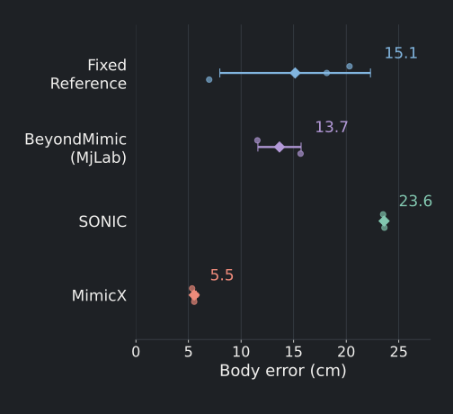

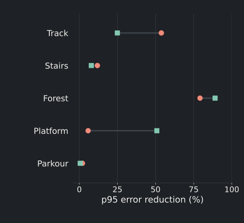

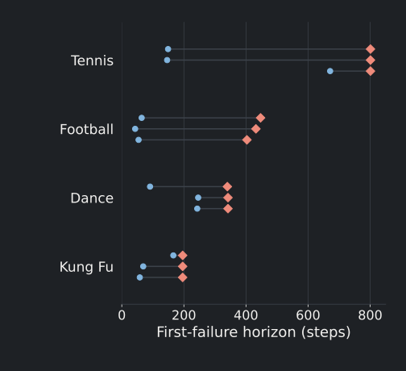

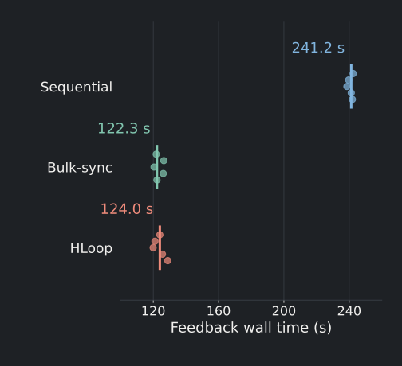

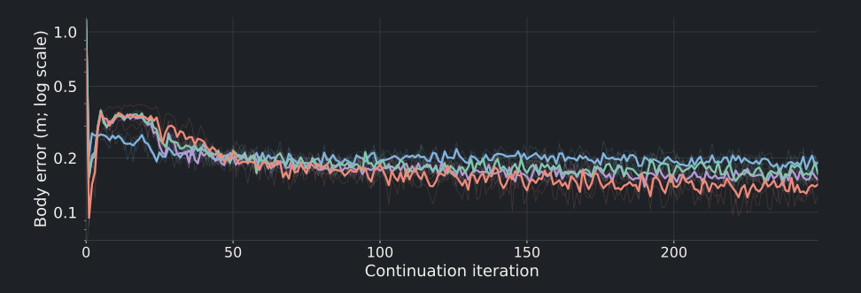
Direct comparison: common reference and evaluation clock, three continuation seeds for trained trackers and three executions of released SONIC. BeyondMimic uses its MjLab implementation with 250 continuation iterations; MimicX uses the frozen verified output. These execution results are separate from equal-budget core ablations.
Four-task comparison
MimicX
| Task | Method | Strict success | Horizon, steps | Body error |
|---|---|---|---|---|
| Tennis Swing | Fixed Reference | 11.1% | 322.0 | 0.241 m |
| Tennis Swing | MimicX | 100.0% | 801.0 | 0.157 m |
| Football Juggling | Fixed Reference | 0.0% | 53.7 | 0.286 m |
| Football Juggling | MimicX | 0.0% | 427.3 | 0.244 m |
| Dance Sequence | Fixed Reference | 0.0% | 193.3 | 0.270 m |
| Dance Sequence | MimicX | 0.0% | 341.3 | 0.244 m |
| Kung Fu Sequence | Fixed Reference | 0.0% | 97.7 | 0.249 m |
| Kung Fu Sequence | MimicX | 0.0% | 196.0 | 0.141 m |
Numerical data & evaluation protocols
All core tasks and component methods are retained in the underlying records. The selected Dance and Kung Fu outputs retain the protected incumbent policy.
accept protect decisions (CSV)
additional video tasks (CSV)
collision scene results (CSV)
core method task summary (CSV)
core trial results (CSV)
direct policy comparison (CSV)
hloop timings (CSV)
motion breadth (CSV)
reward higher regression rejection (CSV)
tennis training dynamics 3000 points (CSV)
Metric definitionsData provenanceHistorical adapter comparison
Faster feedback. The same decision.
MimicX-HLoop overlaps GPU rollout and CPU diagnosis along a dependency graph. Selection uses all evaluation evidence, independent of execution order.

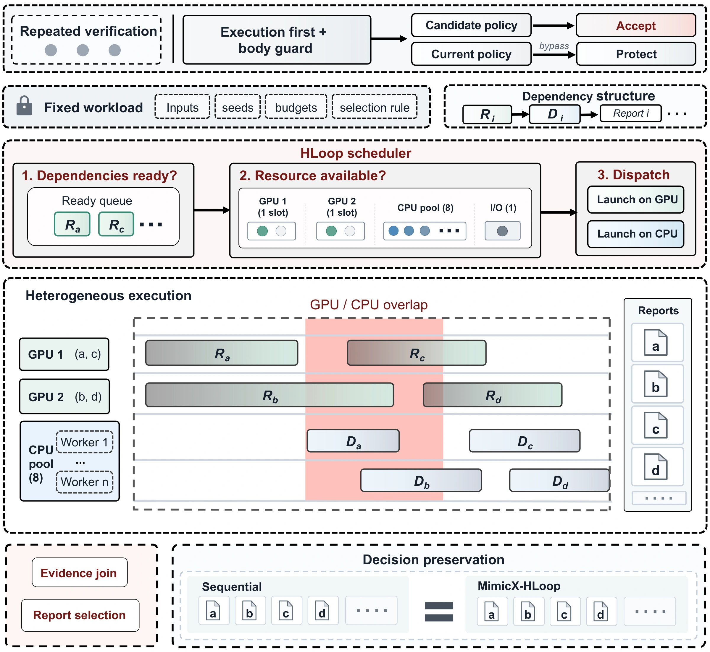
One feedback workload
Eight rollouts, eight CPU diagnoses and one report-selection step: the same four fixed policies, evaluated with two seeds.
- Sequential
- Complete each job before starting the next.
- Bulk-synchronous
- Parallel jobs within each stage; barriers between stages.
- MimicX-HLoop
- Start each CPU diagnosis when its rollout finishes, overlapping independent jobs.
Feedback wall time
Sequential241.221 s
Bulk-synchronous122.258 s
MimicX-HLoop124.017 s
Selection waits for the complete evidence. All five repetitions preserve the sequential outcome.
Medians of five runs; two GPUs and CPU workers. Fixed checkpoints and zero PPO updates isolate feedback scheduling from policy learning.
HLoop protocol